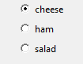

ButtonGroup
(Contains a tkinter.Frame object)
__init__(self, master, options, selected, horizontal=False, command=None, grid=None, align=None)
What is it?
The ButtonGroup object displays a group of radio buttons, allowing the user to choose a single option.

How do I make one?
Create a ButtonGroup object like this:
from guizero import App, ButtonGroup
app = App()
choice = ButtonGroup(app, options=["cheese", "ham", "salad"], selected=1)
app.display()
Starting parameters
When you create a ButtonGroup object you must specify master, options and selected and you can specify any of the optional parameters. Specify parameters in the brackets like this: choice = ButtonGroup(app, options=["cheese", "ham", "salad"], selected=1)
| Parameter | Takes | Default | Compulsory | Description |
|---|---|---|---|---|
| master | App or Box | - | Yes | The container to which this widget belongs |
| options | list or 2D List | - | Yes | Either a list or a 2D list of [text, value] pairs. If a 2D list is specified, the first item in the pair will be displayed on the interface, and the second item will be a hidden value associated with this option. If a list is specified, the options will be automatically numbered with hidden values, beginning at 1. |
| selected | string | - | Yes | The option that should be selected. If the options are specified as a list, the selected option should be the number of the desired option, beginning at 1. If a 2D list is specified, this should be the hidden value associated with one of the options. |
| align | string | None | - | Alignment of this widget within its grid location. Possible values: "top", "bottom", "left", "right". This parameter is only required if the master object has a grid layout. |
| command | function name | None | - | The name of a function to call when the selected option changes. |
| grid | list [int, int] | None | - | [x,y] coordinates of this widget. This parameter is only required if the master object has a grid layout. |
| horizontal | boolean | False | - | Whether the buttons stack vertically or horizontally. (Defaults to vertical) |
Methods
You can call the following methods on an ButtonGroup object.
| Method | Takes | Returns | Description |
|---|---|---|---|
| after(time, command) | time (int), command (function name) | - | Schedules a single call to command after time milliseconds. (To repeatedly call the same command, use repeat()) |
| cancel(command) | command (function name) | - | Cancels a scheduled call to command |
| destroy() | - | - | Destroys the widget |
| focus() | - | - | Gives focus to the widget |
| get_group_as_list() | - | list | Returns a list containing all of the text/hidden value pairs from the ButtonGroup (useful for debugging) |
| hide() | - | - | Hides the widget from view. This method will unpack the widget from the layout manager. |
| repeat(time, command) | time (int), command (function name) | - | Repeats command every time milliseconds. This is useful for scheduling a function to be regularly called, for example updating a value read from a sensor. |
| show() | - | - | Displays the widget if it was previously hidden |
| get() | - | string | Replaced by value property |
| set(value) | value (string) | - | Replaced by value property |
Parameters in italics will still work but are deprecated - this means you should stop using them because they may not work in future versions of guizero
Properties
You can set and get the following properties:
| Method | Data type | Description |
|---|---|---|
| value | string | The hidden value associated with the currently selected option |
| value_text | string | The text associated with the currently selected option |
Refer to a property as <name of widget>.property. For example, if your ButtonGroup object is called choice you would write choice.value.
You can set the property (for example choice.value = "2") or get the value of the property to use (for example print(choice.value)).
Examples
Creating a ButtonGroup with a 2D list
If you want to create a ButtonGroup object with your own hidden values you can specify a 2D list of options:
from guizero import App, ButtonGroup, Text
def update_text():
what_is_selected.value = activities.value
app = App()
activities = ButtonGroup(app, options=[
["Roller Skating", "skate"],
["White water rafting", "WWR"],
["Mountain climbing", "climb"]
],
selected="skate", command=update_text)
what_is_selected = Text(app, text="skate")
app.display()